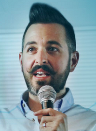
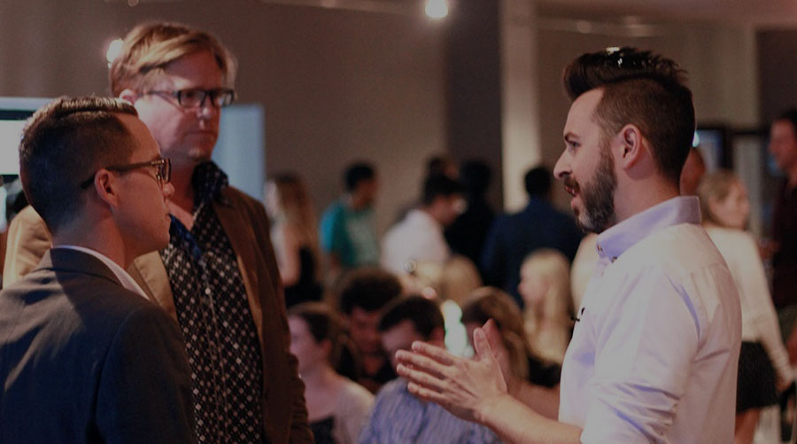

<ion-view view-title="Latest Videos">
  <ion-content>
    <div class="list card">

      <div class="item item-avatar">
        
        <h2>Rand Fishkin</h2>
        <p>November 10, 2014</p>
      </div>

      <div class="item item-body">
        
        <p>
          On 10 November 2014, Heavy Chef had the honour of hosting The Wizard of Moz, Rand Fishkin at World Wide Creative’s Cape Town studio. Presenting on the Paradox of Exceptional Marketing, Fishkin identified 6 of marketing’s greatest filters: audience, message, cost, serendipity, competitive advantage and the marketing flywheel.
        </p>
        <p>
          <a href="#" class="subdued">1 Like</a>
          <a href="#" class="subdued">5 Comments</a>
        </p>
      </div>

      <div class="item tabs tabs-secondary tabs-icon-left">
        <a class="tab-item" href="#">
          <i class="icon ion-thumbsup"></i>
          Like
        </a>
        <a class="tab-item" href="#">
          <i class="icon ion-chatbox"></i>
          Comment
        </a>
        <a class="tab-item" href="#">
          <i class="icon ion-share"></i>
          Share
        </a>
      </div>

    </div>
  </ion-content>
</ion-view>
